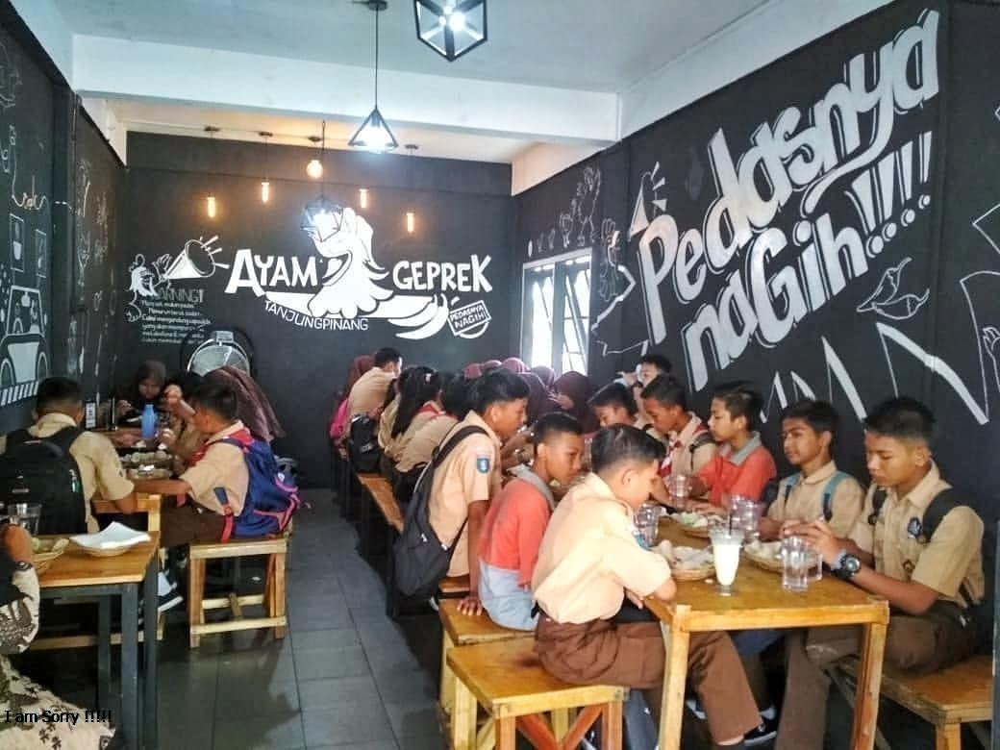
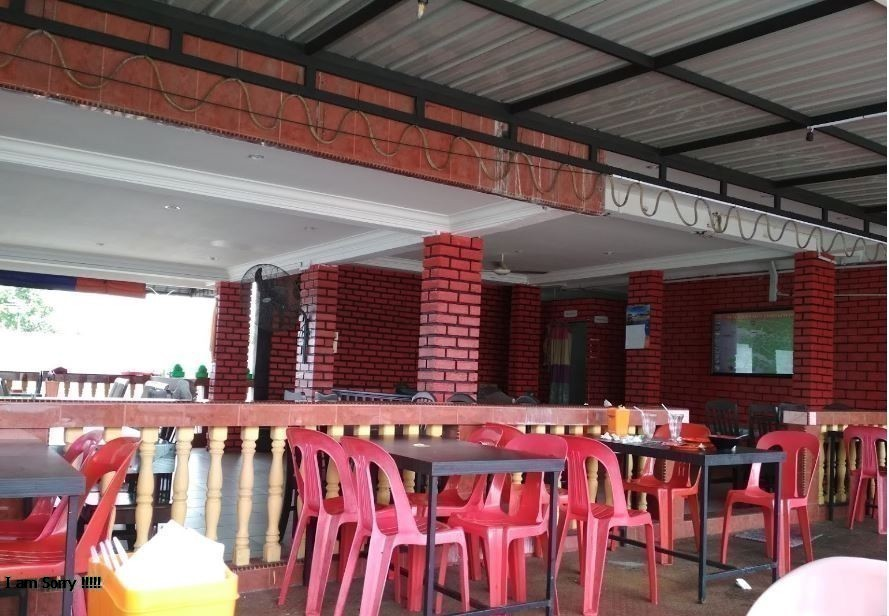
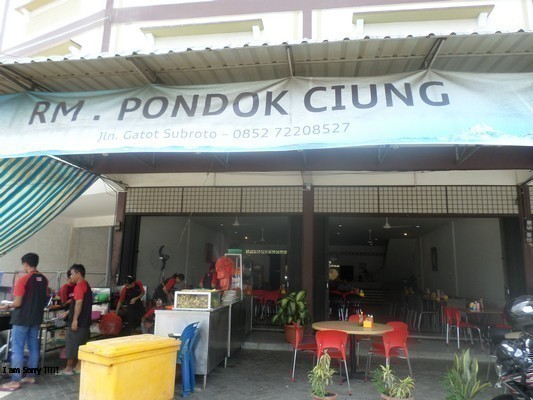
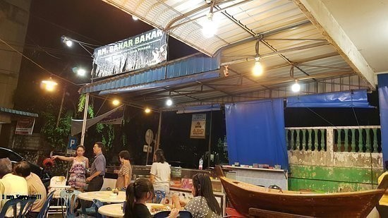
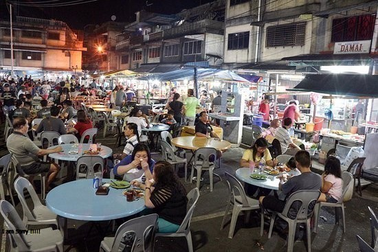

<!DOCTYPE html>
<html>
<head>
	<title>Tempat Makan Termurah di Tanjugpinang</title>		
	<meta name="viewport" content="width=device-width, initial-scale=1.0, maximum-scale=1.0, user-scalable=no" />
	<link rel="stylesheet" href="https://unpkg.com/leaflet@1.3.4/dist/leaflet.css"
   integrity="sha512-puBpdR0798OZvTTbP4A8Ix/l+A4dHDD0DGqYW6RQ+9jxkRFclaxxQb/SJAWZfWAkuyeQUytO7+7N4QKrDh+drA=="
   crossorigin=""/>
  
	<script src="https://unpkg.com/leaflet@1.3.4/dist/leaflet.js"
   integrity="sha512-nMMmRyTVoLYqjP9hrbed9S+FzjZHW5gY1TWCHA5ckwXZBadntCNs8kEqAWdrb9O7rxbCaA4lKTIWjDXZxflOcA=="
   crossorigin=""></script>
    <style>
   		body {
    		padding: 0;
    		margin: 0;
		}
		html, body, #mapid {
	    	height: 100%;
	    	width: 100vw;
		}		
	</style>
	
</head>
<body>
	<div id="mapid"></div>

	<script type="text/javascript">
	var mymap = L.map('mapid').setView([0.9217809,104.4471225], 13);

	L.tileLayer('https://api.tiles.mapbox.com/v4/{id}/{z}/{x}/{y}.png?access_token={accessToken}', {
    attribution: 'Map data &copy; <a href="https://www.openstreetmap.org/">OpenStreetMap</a> contributors, <a href="https://creativecommons.org/licenses/by-sa/2.0/">CC-BY-SA</a>, Imagery © <a href="https://www.mapbox.com/">Mapbox</a>',
    maxZoom: 18,
    id: 'mapbox.streets',
    accessToken: 'pk.eyJ1IjoiaW5kcmlqdW5hbmRhIiwiYSI6ImNqbTJsaWNzMTAyZnAzdmtjdnVheXcwaGQifQ.pNOigSN2GD39Cg9-NWIoUg'
	}).
	addTo(mymap);	


	var ayamgeprektnj 		= L.marker([0.907447, 104.460290]).addTo(mymap);
	var rmpamedan 			= L.marker([0.909547, 104.463934]).addTo(mymap);
	var pondokciung			= L.marker([0.917090, 104.469529]).addTo(mymap);
	var bakarbakar	 		= L.marker([0.925523, 104.451496]).addTo(mymap);
	var potonglembu			= L.marker([0.927544, 104.448821]).addTo(mymap);
	

	ayamgeprektnj.bindPopup("<br><b>(Recommended)</b><br>Ayam Geprek Tanjungpinang", {maxWidth : 150}).openPopup();	
	rmpamedan.bindPopup("<br>Rumah Makan Pamedan",{maxWidth : 150});
	pondokciung.bindPopup("<br>Rumah Makan Pondok Ciung",{maxWidth : 150});
	bakarbakar.bindPopup("<br>Rumah Makan Bakar Bakar",{maxWidth : 150});
	potonglembu.bindPopup("<br>Akau Potong Lembu Tanjungpinang",{maxWidth : 150});
	

	var pop_up = L.popup();

	function onMapClick(e){
		pop_up
		.setLatLng(e.latlng)
		.setContent("lokasi yang dipilih : " + e.latlng.toString())
		.openOn(mymap);
	}

	mymap.on('click',onMapClick);
	

	</script>


</body>
</html>
